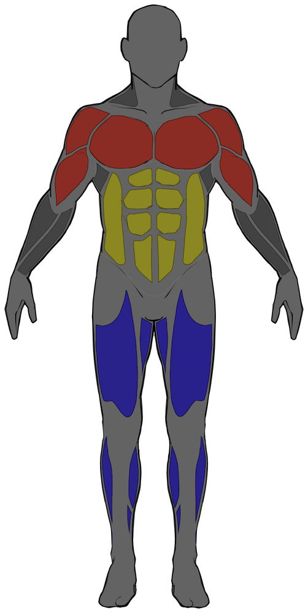

On the main page, you'll see that the body has been divided into three regions: Upper Body, Core and Lower Body.
For each region, ONE bodyweight exercise has been chosen to develop the muscles there.
| Body Region | Relevant Muscles | Exercise Name |
|---|---|---|
| Upper Body | Chest and Arms | Push Up |
| Core | Abdominals and Obliques | Plank |
| Lower Body | Quadriceps, Hamstrings and Calves | Squat |
Each exercise has been split into FIVE grades of difficulty. These are different variations of the base exercise that scale with increasing complexity.
Number 1 is the easiest variation; number 5 is the most challenging.
Thanks for checking out the website! Send me an email at jack.cw.chiu@gmail.com for any feedback or suggestions.
Press HERE to return to the home page.